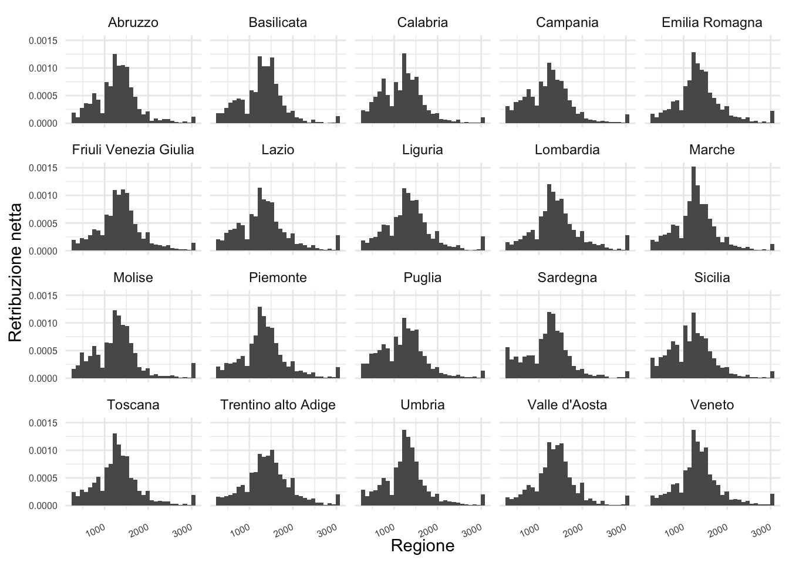
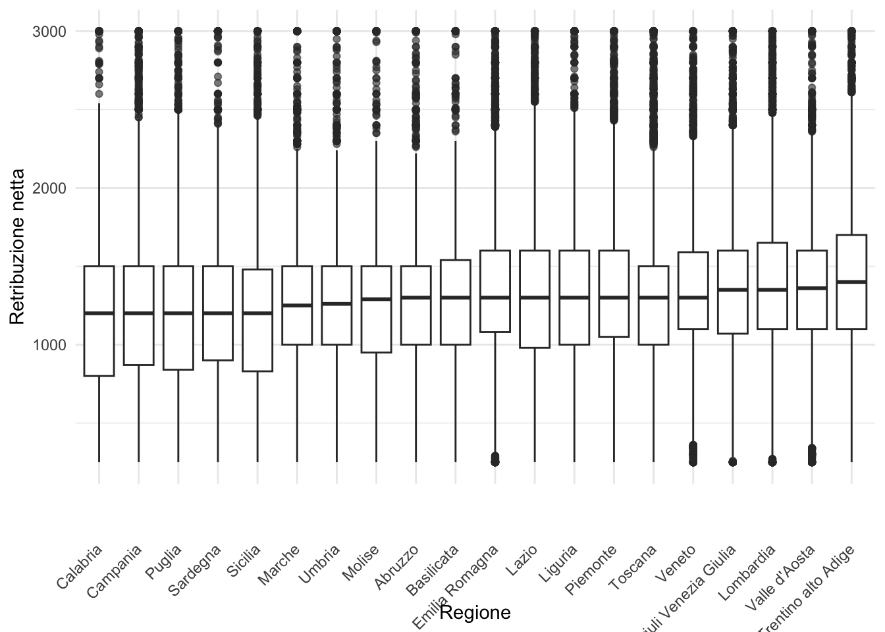

head(df[, "genere"])# A tibble: 6 × 1
genere
<chr>
1 Maschio
2 Femmina
3 Femmina
4 Maschio
5 Maschio
6 FemminaLe variabili dummy sono utilizzate per analizzare variabili categoriche.
Utilizeremo un dataset contenente alcuni variabili che descrivono le caratteristiche di una campione di lavoratori dipendenti italiani.
| Variabile | Descrizione |
|---|---|
retric |
Retribuzione mensile netta |
genere |
Genere del lavoratore |
regione |
Regione di residenza |
edulev |
Livello di istruzione |
istruzione_anni |
Anni di istruzione completati |
eta |
Età del lavoratore |
titolo10 |
Titolo di studio |
detind |
Tipo di contratto di lavoro (indeterminato, determinato) |
piepar |
Tipo di orario di lavoro (pieno, parziale) |
tenure |
Anni di lavoro presso l’attuale datore di lavoro |
cittadinanza |
Se il lavoratore ha la cittadinanza italiana |
sg13 |
Luogo di nascita |
orelav |
Ore di lavoro settimanali |
genere_dummy |
Variabile dummy per il genere (1 = Femmina, 0 = Maschio) |
Il file può essere scaricato qua.
Consideriamo la variabile genere:
# A tibble: 6 × 1
genere
<chr>
1 Maschio
2 Femmina
3 Femmina
4 Maschio
5 Maschio
6 FemminaLa variabile assume il valore maschio o femmina a seconda che l’individua sia di genere maschile o femminile. Possiamo creare la variabile manualmente nel modo seguente
La variabile Maschio prende il valore 1 se il genere dell’individuo è maschile e 0 altrimenti.
Possiamo utilizzare questa variabile per analizzare la variabile genere. Per esempio, possiamo prendere la media di Maschio
La media nel caso di una variabile dummy è la percentuale di osservazioni che prendono il valore uno. Nel caso dei nostri dati, \(\bar{X}_{maschi}=0.535\) indica che circa il 53.46% dei lavoratori nel nostro campione è maschio.
Non c’è nulla di speciale nella scelta di “maschio” come valore per assegnare alla variabile dummy il valore 1. Possiamo infatti creare la variabile dummy Femmina con il valore 1 qualora il lavoratore sia di genere femminile.
In questo caso, \(\bar{X}_{femmina}=0.465\) indica che circa il 46.54 dei lavoratori nel nostro campione è una donna (questa percentuale non è altro che \(1-\bar{X}_{maschio}\).)
Come possiamo usare questa variabile in una regressione? Possiamo usare la dummy come variabile indipendente.
OLS estimation, Dep. Var.: retric
Observations: 138,618
Standard-errors: IID
Estimate Std. Error t value Pr(>|t|)
(Intercept) 1171.258 1.99513 587.058 < 2.2e-16 ***
Maschio 281.449 2.72871 103.144 < 2.2e-16 ***
---
Signif. codes: 0 '***' 0.001 '**' 0.01 '*' 0.05 '.' 0.1 ' ' 1
RMSE: 506.7 Adj. R2: 0.071272L’interpretazione del coefficiente sulla dummy non è altro che la differenza dela salario fra uomini (Maschio=1) e donne (Maschio=0). Quindi, visto che \(\hat{\beta}_1 = 281.4492935\), gli uomini nel nostro campione guadagnano in media \(281.4492935\) euro piu’ delle donne. L’intercetta è in questa regressione la media (sempre nel campione) del salario delle donne (l’intercetta è interpretabile come la media della variabile dipendente quando i regressori sono uguali a zero).
Se utilizziamo la dummy Femmina invece della variabile dummy Maschio, i coefficienti stimati saranno diversi, ma la loro interpetazione finale sarà identica.
OLS estimation, Dep. Var.: retric
Observations: 138,618
Standard-errors: IID
Estimate Std. Error t value Pr(>|t|)
(Intercept) 1452.708 1.86154 780.381 < 2.2e-16 ***
Femmina -281.449 2.72871 -103.144 < 2.2e-16 ***
---
Signif. codes: 0 '***' 0.001 '**' 0.01 '*' 0.05 '.' 0.1 ' ' 1
RMSE: 506.7 Adj. R2: 0.071272In questa nuova regression, \(\hat{\beta}_1 = 1452.7076446\), e quindi possiamo dire che le donne nel nostro campione guadagnano in media \(1452.7076446\) euro in meno degli uomini. L’intercetta è invece la media del salario degli uomini.
Se calcolassimo le medie e la differenze delle medie manualemnte senza usare la regressione otterremo gli stessi risultati. Per esempio, il salario medio dei lavoratori di sesso maschile è esattamente uguale al coefficiente \(\hat{\beta}_0\) nella regressione che usa la veriaile dummy Femmina:
Per avere una completa panaromica della media di retric per genere possiamo usare la funzione group_by e summarize di dplyr”
# A tibble: 2 × 2
genere `mean(retric)`
<chr> <dbl>
1 Femmina 1171.
2 Maschio 1453.I coefficienti delle due regressioni stimano i corrispondenti valori della popolazione: \(\hat{\beta}_0\) stima la media nella popolazione dei salari per il caso in cui la variabile dummy è zero; \(\hat{\beta}_1\) stima la differenza dei salari medi nella poplazione fra i lavoratori con variabile dummy uguale a 1 e variabile dummy uguale a zero. Quindi possiamo chiederci se questa differenza nei salari che vediamo nel campioni è probabile che permangano qualora avessimo a disposizione l’intera popolazione. L’intervallo di confidenza risponde a questa domanda fornendoci un intervallo di valori probabili della differenza salariale fra uomini e donne nel campione:
Gli intervalli sono molto piccoli (come era prevedibile vista la grandezza del campione) e ci dice che questa differenza non è probabilmenmte dovuta al particolare compione che stiamo analizzando.
Una variabile particolarmente interessante del nostro dataset è la variabile regione che fornisce la regione di residenza di ciascun lavoratore nel nostro campione
# A tibble: 6 × 1
regione
<chr>
1 Puglia
2 Lombardia
3 Piemonte
4 Lombardia
5 Umbria
6 Campania L’esistenza di differenza salariali nelle regioni italiane può essere investigata mediante un grafico che mostra la distribuzione di retric per ciascuna regione:
ggplot(df, aes(x = retric)) +
xlab("Regione") +
ylab("Retribuzione netta") +
geom_histogram(aes(y=stat(density))) +
theme_minimal() +
theme(axis.text.x =
element_text(
angle = 25,
vjust = 0.5,
hjust = 1,
size = 6),
axis.text.y =
element_text(size = 6)
) + facet_wrap(~regione)Warning: `stat(density)` was deprecated in ggplot2 3.4.0.
ℹ Please use `after_stat(density)` instead.`stat_bin()` using `bins = 30`. Pick better value with `binwidth`.
ggplot(df, aes(y = retric, x = fct_reorder(regione, retric))) +
xlab("Regione") +
ylab("Retribuzione netta") +
geom_boxplot(outlier.alpha = 0.6) +
theme_minimal() +
theme(axis.text.x = element_text(
angle = 45,
vjust = 0.5,
hjust = 1
))
Pur essendo una variabile categorica, regione prende piu’ di due valori e quindi non è possibile codificare l’informazione contenuta in essa mediante un’unica variabile dummy. In questo caso creiama una dummy per ciascuna regione: una dummy Lombardia che prende il valore 1 per quei lavoratori che risiedono in Lombardia e 0 per gli altri, una dummy Sicilia per i lavoratori che risiedono in Sicilia e 0 per gli altri, e così via.
E’ possibile creare queste dummy manualmente:
La creazione manuale è però tediosa e prona ad errori. È preferibile automatizzare il processo di creazione delle dummy mediante il pachetto fastDummies.
Dopo l’esecuzione del codice, df conterrà una variabile dummy per ciascuna regione. Possiamo adesso calcolare la media di ciascuna dummy così creata per ottenere la percentuale dei residenti in ciascuna regione. Per esempio,
indica che circa il 1.96% dei lavoratori del nostro campione è residente in Calabria.
Qual è l’interpretazione della regressione in cui aggiungiamo tutte le dummy?
lm_regione <- feols(retric~Abruzzo+Basilicata+ Calabria + Campania +
`Emilia Romagna` + `Friuli Venezia Giulia` +
Lazio + Liguria + Lombardia + Marche + Molise+
Piemonte + Puglia + Sardegna + Sicilia +
Toscana + `Trentino alto Adige` + Umbria +
`Valle d'Aosta` + Veneto, data = df)The variable 'Veneto' has been removed because of collinearity (see $collin.var).OLS estimation, Dep. Var.: retric
Observations: 138,618
Standard-errors: IID
Estimate Std. Error t value Pr(>|t|)
(Intercept) 1352.67843 5.88778 229.743479 < 2.2e-16 ***
Abruzzo -67.03866 11.67738 -5.740897 9.4372e-09 ***
Basilicata -62.22983 10.73230 -5.798367 6.7108e-09 ***
Calabria -159.50447 11.59058 -13.761558 < 2.2e-16 ***
Campania -124.70487 8.18131 -15.242653 < 2.2e-16 ***
`Emilia Romagna` 8.80117 7.58301 1.160645 2.4579e-01
`Friuli Venezia Giulia` 3.25957 9.44556 0.345090 7.3003e-01
Lazio -30.97062 7.82437 -3.958227 7.5546e-05 ***
Liguria -2.50250 10.18666 -0.245665 8.0594e-01
Lombardia 56.13623 6.91684 8.115883 4.8617e-16 ***
Marche -76.95157 10.14049 -7.588549 3.2551e-14 ***
Molise -79.67389 14.50991 -5.490998 4.0037e-08 ***
Piemonte -12.44023 7.66513 -1.622964 1.0460e-01
Puglia -139.24116 9.10816 -15.287521 < 2.2e-16 ***
Sardegna -150.99941 10.57937 -14.273005 < 2.2e-16 ***
Sicilia -166.02165 7.95915 -20.859208 < 2.2e-16 ***
Toscana -54.75509 8.10400 -6.756549 1.4187e-11 ***
`Trentino alto Adige` 81.81903 7.95858 10.280604 < 2.2e-16 ***
Umbria -79.82247 10.44123 -7.644928 2.1040e-14 ***
`Valle d'Aosta` 14.82207 9.45899 1.566983 1.1712e-01
... 1 variable was removed because of collinearity (Veneto)
---
Signif. codes: 0 '***' 0.001 '**' 0.01 '*' 0.05 '.' 0.1 ' ' 1
RMSE: 520.6 Adj. R2: 0.019842La funzione feols ci informa che una delle variabili dummy è stata rimossa per evitare la collinearità (la trappola delle variabili dummy). I coefficienti della regressione sono la differenza fra il salario medio nella regione a cui il coefficiente si riferisce e la regione omessa dalla regressione che, in questo caso, è la regione Veneto. Per esempio, il coefficite della dummy Sicilia ci dice che in media i lavoratori residenti nell’isola guadagnano 166.0216453 euro in meno dei lavoratori residenti in Veneto.
Aggiungere variabili dummy al modello di regressione è un’operazione così frequente che R possiede un meccanismo automatico per la loro gestione: aggiungere nella regressione la variabile categorica automaticamente crea e aggiunge al modello una dummy per ciascuna categoria.
OLS estimation, Dep. Var.: retric
Observations: 138,618
Standard-errors: IID
Estimate Std. Error t value Pr(>|t|)
(Intercept) 1285.63977 10.0844 127.487822 < 2.2e-16 ***
regioneBasilicata 4.80883 13.4986 0.356247 7.2166e-01
regioneCalabria -92.46581 14.1905 -6.516024 7.2442e-11 ***
regioneCampania -57.66621 11.5743 -4.982284 6.2913e-07 ***
regioneEmilia Romagna 75.83983 11.1594 6.796071 1.0794e-11 ***
regioneFriuli Venezia Giulia 70.29823 12.4999 5.623892 1.8706e-08 ***
regioneLazio 36.06804 11.3248 3.184884 1.4484e-03 **
regioneLiguria 64.53616 13.0689 4.938129 7.8967e-07 ***
... 12 coefficients remaining (display them with summary() or use argument n)
---
Signif. codes: 0 '***' 0.001 '**' 0.01 '*' 0.05 '.' 0.1 ' ' 1
RMSE: 520.6 Adj. R2: 0.019842Se volessimo ottenere i risultati delle regressione omettando un’altra regione, possiamo usare la funzione i() che prende come pri argomento la variabile categorica e come secondo argomento la categoria da escludere. Pertanto, per escludere la dummy riferita alla regione Campania usiamo come regressore i(regione, "Campanio").
OLS estimation, Dep. Var.: retric
Observations: 138,618
Standard-errors: IID
Estimate Std. Error t value Pr(>|t|)
(Intercept) 1227.9736 5.68048 216.17407 < 2.2e-16 ***
regione::Abruzzo 57.6662 11.57425 4.98228 6.2913e-07 ***
regione::Basilicata 62.4750 10.62000 5.88277 4.0437e-09 ***
regione::Calabria -34.7996 11.48667 -3.02956 2.4495e-03 **
regione::Emilia Romagna 133.5060 7.42320 17.98496 < 2.2e-16 ***
regione::Friuli Venezia Giulia 127.9644 9.31776 13.73339 < 2.2e-16 ***
regione::Lazio 93.7343 7.66960 12.22154 < 2.2e-16 ***
regione::Liguria 122.2024 10.06826 12.13738 < 2.2e-16 ***
... 12 coefficients remaining (display them with summary() or use argument n)
---
Signif. codes: 0 '***' 0.001 '**' 0.01 '*' 0.05 '.' 0.1 ' ' 1
RMSE: 520.6 Adj. R2: 0.019842Come nel caso della variabile genere, i valori dei coefficienti sono esattamenti uguali alle differenze delle medie calcolate manualmente. Per convincerci di ciò, possiamo calcolare la media di retric per regione e sottrarre la media della Campania usando la funzione group_by e summarize di dplyr.
## Calcoliamo la media dei salari in Campania
mc <- df %>% filter(regione=="Campania") %>%
summarize(mc = mean(retric)) %>% pull(mc)
## `mc` e' uguale all'intercetta della regressione che
## esclude la dummy per la Campania.
## Calcoliamo la media dei salari in ciascuna regione e sottraiamo
## `mc`
df %>% filter(regione!="Campania") %>%
group_by(regione) %>%
summarize(`Differenza da media Campania` = mean(retric)-mc) %>%
arrange(`Differenza da media Campania`)# A tibble: 19 × 2
regione `Differenza da media Campania`
<chr> <dbl>
1 Sicilia -41.3
2 Calabria -34.8
3 Sardegna -26.3
4 Puglia -14.5
5 Umbria 44.9
6 Molise 45.0
7 Marche 47.8
8 Abruzzo 57.7
9 Basilicata 62.5
10 Toscana 69.9
11 Lazio 93.7
12 Piemonte 112.
13 Liguria 122.
14 Veneto 125.
15 Friuli Venezia Giulia 128.
16 Emilia Romagna 134.
17 Valle d'Aosta 140.
18 Lombardia 181.
19 Trentino alto Adige 207. Il vantaggio di usare la regressione rispetto a calcolare la differenza medie manualmente è la regressione ci restituisce gli errori standard delle differenze delle media consentendoci la costruzione immediata degli intervalli di confidenza.
2.5 % 97.5 %
(Intercept) 1341.138502 1364.218367
Abruzzo -89.926111 -44.151208
Basilicata -83.264940 -41.194721
Calabria -182.221796 -136.787151
Campania -140.740079 -108.669653
`Emilia Romagna` -6.061372 23.663721
`Friuli Venezia Giulia` -15.253560 21.772697
Lazio -46.306226 -15.635005
Liguria -22.468156 17.463149
Lombardia 42.579363 69.693096
Marche -96.826733 -57.076413
Molise -108.113045 -51.234739
Piemonte -27.463752 2.583285
Puglia -157.092974 -121.389340
Sardegna -171.734783 -130.264047
Sicilia -181.621436 -150.421854
Toscana -70.638786 -38.871401
`Trentino alto Adige` 66.220357 97.417696
Umbria -100.287085 -59.357850
`Valle d'Aosta` -3.717364 33.361506L’obiettivo è misurare la differenza salariale tra donne e uomini che condividono le stesse caratteristiche rilevanti, come l’istruzione, l’esperienza lavorativa, il settore di impiego, ecc., ma differiscono per genere.
OLS estimation, Dep. Var.: retric
Observations: 138,618
Standard-errors: IID
Estimate Std. Error t value Pr(>|t|)
(Intercept) 1118.134158 9.81249 113.950063 < 2.2e-16 ***
genereMaschio 290.437520 2.70004 107.568035 < 2.2e-16 ***
regioneBasilicata 0.001989 12.96823 0.000153 9.9988e-01
regioneCalabria -91.809556 13.63291 -6.734407 1.6524e-11 ***
regioneCampania -65.965371 11.11971 -5.932295 2.9944e-09 ***
regioneEmilia Romagna 95.899709 10.72248 8.943802 < 2.2e-16 ***
regioneFriuli Venezia Giulia 86.855842 12.00973 7.232126 4.7793e-13 ***
regioneLazio 48.195564 10.88033 4.429603 9.4479e-06 ***
... 13 coefficients remaining (display them with summary() or use argument n)
---
Signif. codes: 0 '***' 0.001 '**' 0.01 '*' 0.05 '.' 0.1 ' ' 1
RMSE: 500.1 Adj. R2: 0.095359In questa prima regressione stiamo “controllando” per la regione di residenza. L’interpretazione del coefficiente di gender è quindi la differenza media dei salari fra uomini e donne a parità di regione di residenza. La stima di tale differenza è di circa 290.44 euro. Questa differenza è statisticamente significativa, cioè possiamo rigettare l’ipotesi nulla che nella popolazione la differenza è uguale a zero (\(H_0: \beta_1=0\)) poichè l’intervallo di onfidenza non contiene zero o, equivalentemente, la statistica \(t\) è maggiore in valore assoluto del valore critico (\(1.96\)).
Chiaramente, uomini e donne possono differire per livelli di istruzione (istruzione_anno), per la tipologia di contratto (detind) e se lavorano in part-time (piepar) e per il numero di ore lavorate.
OLS estimation, Dep. Var.: retric
Observations: 138,618
Standard-errors: IID
Estimate Std. Error t value Pr(>|t|)
(Intercept) -19.714271 8.840365 -2.230029 2.5747e-02 *
istruzione_anni 41.355406 0.261081 158.400638 < 2.2e-16 ***
piepartempo pieno 521.552688 2.792073 186.797681 < 2.2e-16 ***
detindtempo indeterminato 286.402687 2.939087 97.446140 < 2.2e-16 ***
genereMaschio 201.536591 2.283682 88.250741 < 2.2e-16 ***
regioneBasilicata -0.101848 10.224505 -0.009961 9.9205e-01
regioneCalabria -39.440407 10.749966 -3.668887 2.4370e-04 ***
regioneCampania -42.821891 8.767499 -4.884163 1.0398e-06 ***
... 16 coefficients remaining (display them with summary() or use argument n)
---
Signif. codes: 0 '***' 0.001 '**' 0.01 '*' 0.05 '.' 0.1 ' ' 1
RMSE: 394.3 Adj. R2: 0.437681Per tenere conto delle ore lavorate (orelav) possiamo usare come variabile dipendente il rapporto fra il salario orario netto mensile e le ore lavorete nel mese (che è uguale a \(4\times orelav\)):
OLS estimation, Dep. Var.: I(retric/(4 * orelav))
Observations: 138,618
Standard-errors: IID
Estimate Std. Error t value Pr(>|t|)
(Intercept) 3.724961 0.201074 18.525280 < 2.2e-16 ***
istruzione_anni 0.403373 0.005938 67.927402 < 2.2e-16 ***
piepartempo pieno -0.178177 0.063506 -2.805674 5.0218e-03 **
detindtempo indeterminato 1.799457 0.066850 26.917971 < 2.2e-16 ***
genereMaschio 0.287500 0.051942 5.534970 3.1184e-08 ***
regioneBasilicata -0.158508 0.232557 -0.681588 4.9550e-01
regioneCalabria -0.462131 0.244508 -1.890040 5.8755e-02 .
regioneCampania -0.312879 0.199417 -1.568968 1.1666e-01
... 16 coefficients remaining (display them with summary() or use argument n)
---
Signif. codes: 0 '***' 0.001 '**' 0.01 '*' 0.05 '.' 0.1 ' ' 1
RMSE: 8.96792 Adj. R2: 0.040316Come possiamo interpretare il coefficiente su genereMaschio nell’ultima regressione? Per esempio, come è possibile interpretare la grandezza del coefficiente in maniera percentuale (per esemptio, di quanto è più alto il salario degli uomini in termini percentuali rispetto a quello delle donne?)
La differenza fra i salari fra uomini e donne nell’ultima regression è statisticamente significativa?
Quali sono le altre variabili che è probabile possono influenzare l’interpretezione del coefficiente su genereMaschio come indicativo di discriminazione?